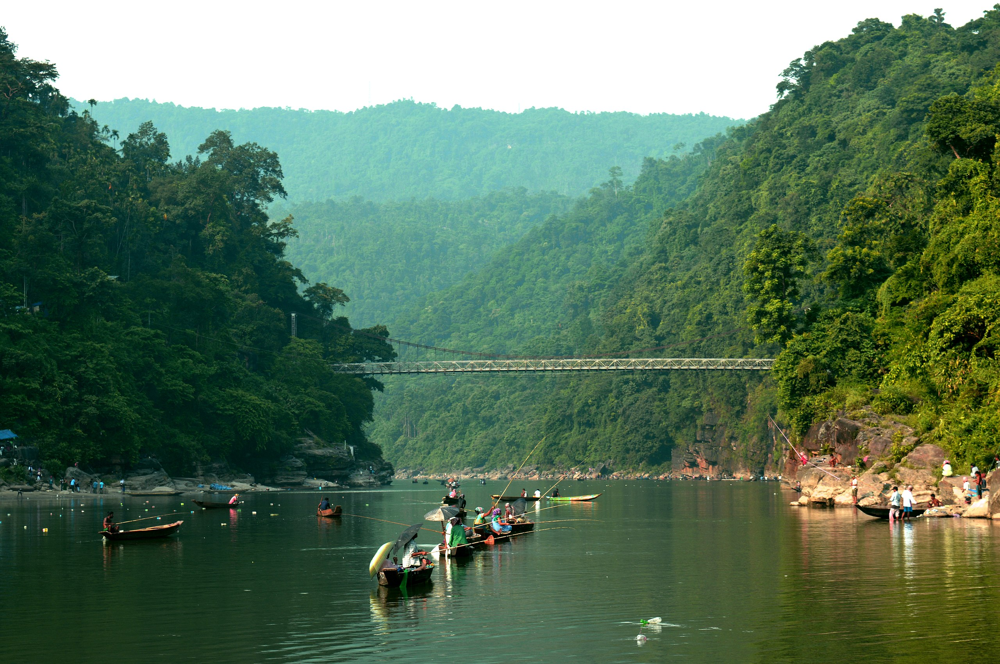
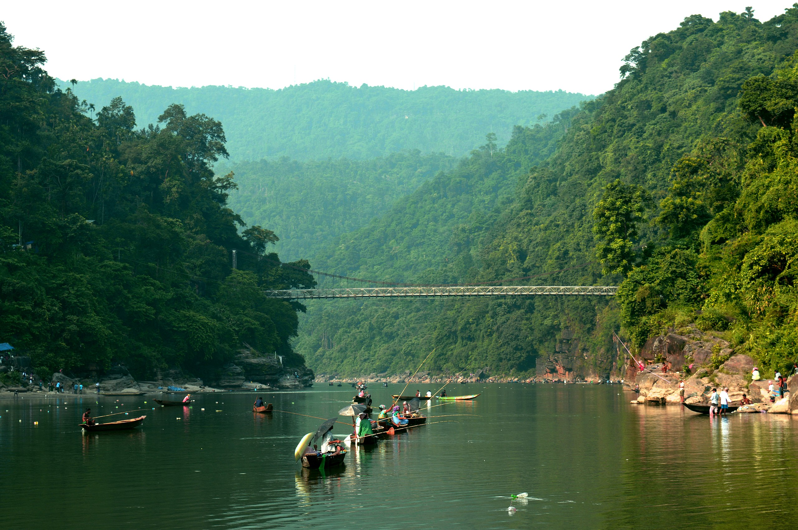

লালাখাল আমার জীবনের অন্যতম অভিজ্ঞতা
আমার দেখা সিলেটের অন্যতম সেরা দর্শনীয় স্থান... সিলেট শহর থেকে ৪৬ কিমি দূরে এই স্থানটি। সেখানে যেতে পারেন সিএনজি বাসে। সবার আগে যেতে হবে শাড়ি ঘাট বাজার। তারপর শাড়ি ঘাট বাজারের সামনে অটোরিকশা পাবেন। লালাখালের চূড়ান্ত গন্তব্যে পৌঁছাতে অটোরিকশা লাগবে শত থেকে দেড়শ টাকা। পৌঁছানোর পরে, আপনাকে লালাখাল দেখার জন্য একটি নৌকা ভাড়া করতে হবে। জল এতই নীল এবং খুব সুন্দর যে বাংলাদেশের সৌন্দর্য দেখে আপনার চোখ থামবে না। নৌকা লাগবে ৮০০ থেকে ১৫০০ টাকা। বোর্ড আপনাকে লালাখাল জিরো পয়েন্টে নিয়ে যাবে।